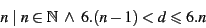
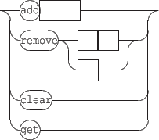

Interaction messages are user defined messages associated to events and triggered when these events occur. These messages accept variables as message arguments.
The general form of the message is the following:

what represents the event to watch and message is a list of associated messages, separated by a comma.
NOTE
The [1] and [2] form has no effect with the watch+ message.
In some environments, the comma has a special meaning, making tricky to use it as a message separator. This is why ':' is also accepted as separator in OSC messages.

The associated messages are any valid OSC message (not restricted to the INScore message set), with an extended address scheme, supporting IP addresses or host names and udp port number to be specified as OSC addresses prefix. The message parameters are any valid OSC type or variable (see section 13.2).

EXAMPLE
An extended address to send messages to localhost on port 12000:
| localhost:12000/your/osc/address |